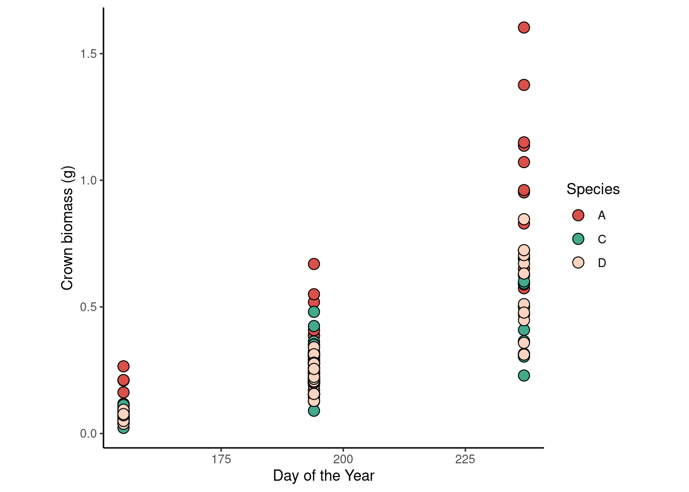

library(tidyverse)
url <- "https://raw.githubusercontent.com/jlacasa/stat705_fall2024/main/classes/data/lotus_part3.csv"
dd <- read.csv(url)
dd %>%
ggplot(aes(doy, crown_g))+
geom_point(aes(fill = species), shape = 21, size =3.5)+
scale_fill_manual(values = c("#DB504A", "#43AA8B", "#FAD4C0"))+
labs(x = "Day of the Year",
y = "Crown biomass (g)",
fill = "Species")+
theme_classic()+
theme(aspect.ratio = 1)